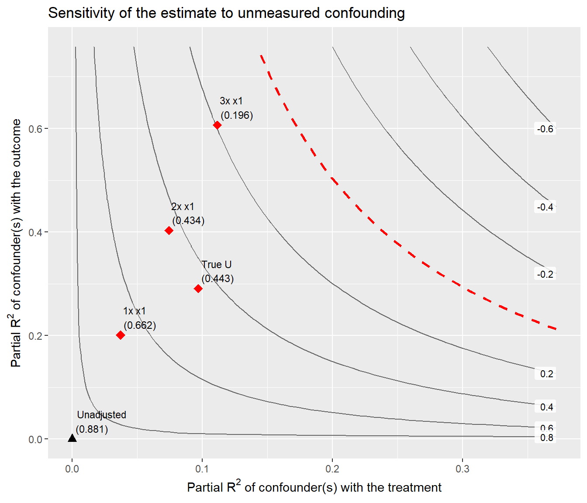
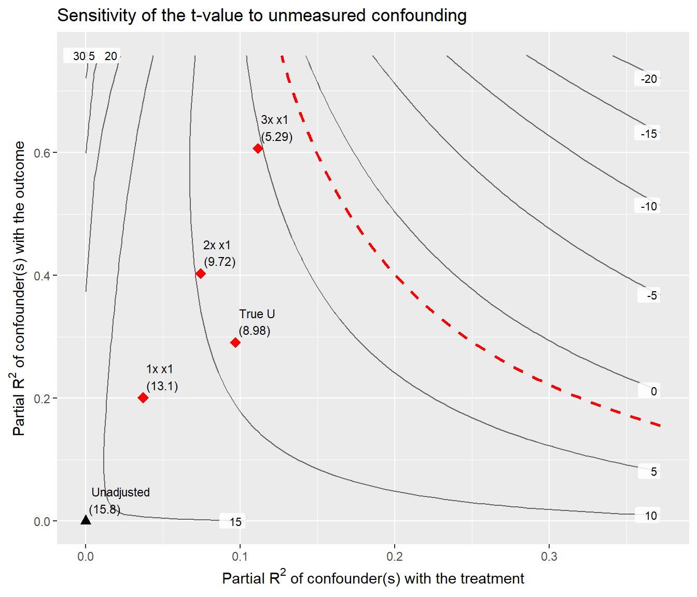
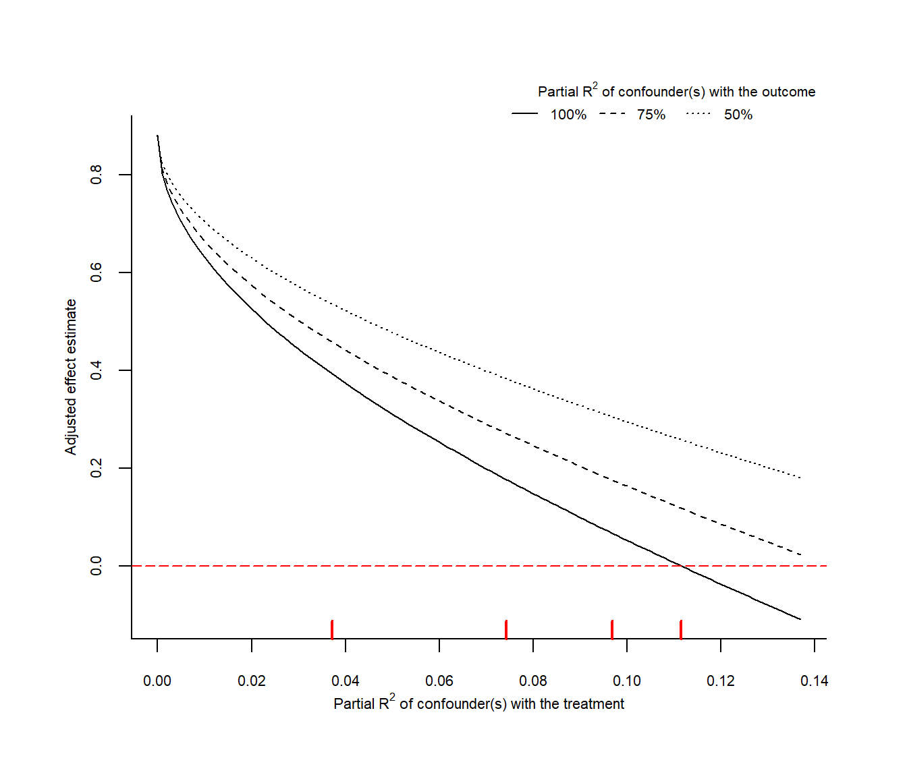
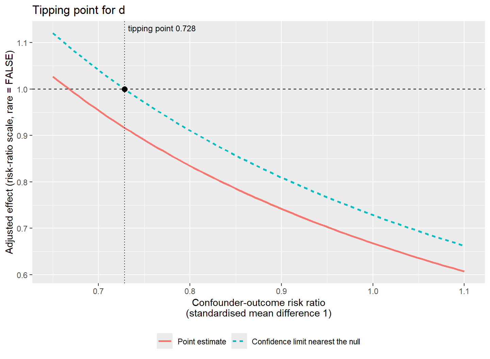
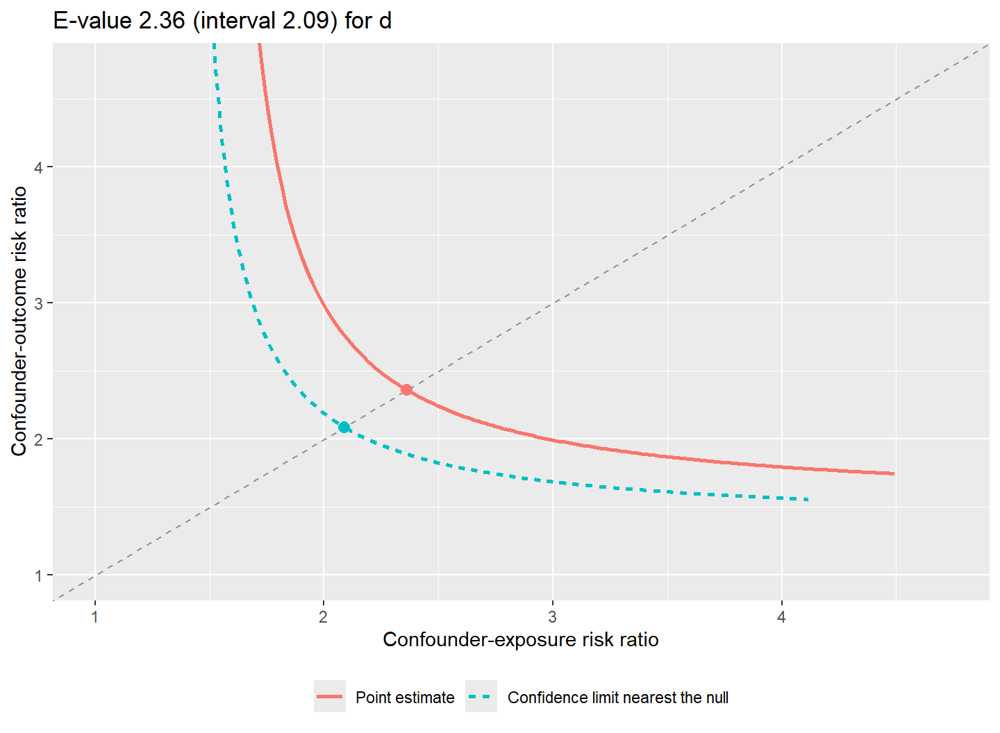
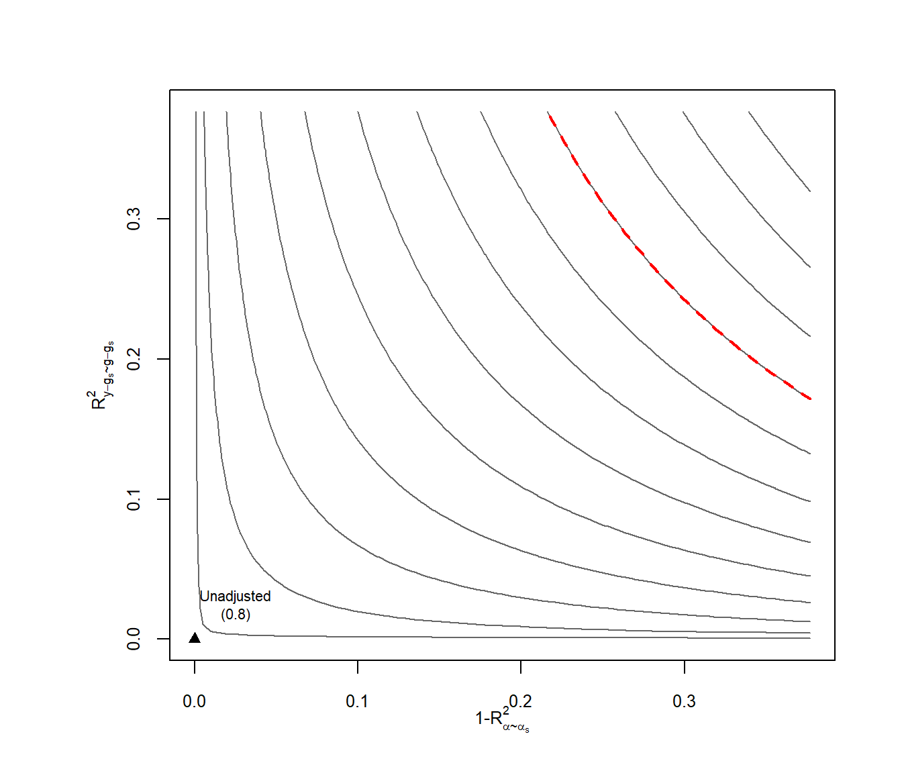
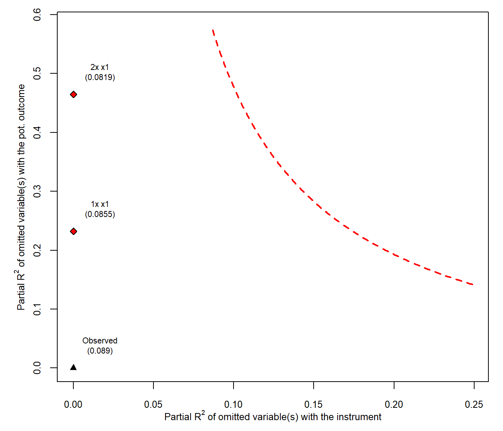

set.seed(20260928)
n <- 2000
d <- data.frame(x1 = round(rnorm(n), 3), # 已测混杂（后面用作基准）
x2 = rbinom(n, 1, 0.4), # 已测混杂
x3 = round(rnorm(n), 3)) # 只影响结局
U <- rnorm(n) # 未测混杂：不进 d
d$z <- rbinom(n, 1, 0.5) # 工具变量：只影响治疗
d$d <- rbinom(n, 1, plogis(-0.3 + 0.5 * d$x1 + 0.4 * d$x2 + 0.8 * U + 1.2 * d$z))
# 连续结局：真实效应 0.5
d$y <- round(1 + 0.5 * d$d + 0.6 * d$x1 + 0.3 * d$x2 + 0.4 * d$x3 +
0.7 * U + rnorm(n), 3)
# 生存结局：真实（条件）风险比 0.8
ev <- rexp(n, 0.01 * exp(log(0.8) * d$d + 0.3 * d$x1 + 0.2 * d$x2 - 0.7 * U))
cens <- runif(n, 20, 120)
d$time <- round(pmin(ev, cens), 2)
d$event <- as.integer(ev <= cens)
adj <- c("x1", "x2", "x3")4. 未测量混杂的敏感性分析：get_sens() 与 plt_sens()
causalR 包函数手册
观察性研究的结论总要面对同一个追问：如果还有一个没测到的混杂变量，结论会不会翻转？ get_sens() 把这个问题交给四个后端之一，并把结果整理成同一种形状； plt_sens() 画出与后端对应的敏感性图。
method |
模型 | 敏感性量 | 后端包 | plt_sens() 的图 |
|---|---|---|---|---|
"lm" |
线性回归 | 偏 \(R^2\)、稳健值 RV / XRV、基准情景 | sensemakr | "contour"（原生 ggplot）、"extreme" |
"cox" |
Cox 比例风险 | 翻转点（tipping point）、E 值 | tipr | "tip"、"evalue"（均为原生） |
"dml" |
双重机器学习 | 偏 \(R^2\) 界、稳健值 | dml.sensemakr | "contour" |
"iv" |
工具变量 | 工具—结局混杂的偏 \(R^2\)、稳健值 | iv.sensemakr | "contour" |
两类核心量不能互相比较：稳健值（rv_q、rv_qa、xrv_qa）是 \([0, 1)\) 上的偏 \(R^2\)， E 值（evalue_point、evalue_ci）是 \([1, \infty)\) 上的风险比乘数，二者之间没有单调换算。 所以它们放在不同的列，不属于自己后端的列一律是 NA。
安装与核对环境
remotes::install_github("HUI950319/causalR")
install.packages(c("sensemakr", "tipr", "survival", "ggplotify"))
# DML 与 IV 后端只在 GitHub
remotes::install_github(c("carloscinelli/dml.sensemakr", "carloscinelli/iv.sensemakr"))本页核对于 2026 年 9 月 28 日，代码块由本站渲染时真实执行：
| 项目 | 值 |
|---|---|
| causalR | 0.0.0.9000（GitHub main） |
| sensemakr / tipr | 0.1.6 / 1.0.2 |
| dml.sensemakr / iv.sensemakr | 0.2.2 / 0.1.0.9000 |
示例数据：一个真实存在、但没测到的混杂
模拟数据里有一个混杂变量 U：它同时推高接受治疗的概率、推高连续结局、降低事件风险， 但不放进数据框——分析者看不到它。因为 DGP 写死，可以拿”如果测到了 U“的结果当参照， 检验敏感性分析的结论是否可靠。
作为参照，把 U 加回去各拟合一次（现实中做不到）：
dU <- cbind(d, U = U)
fit_U <- lm(y ~ d + x1 + x2 + x3 + U, data = dU)
fit_noU <- lm(y ~ d + x1 + x2 + x3, data = d)
c(with_U = unname(coef(fit_U)["d"]), without_U = unname(coef(fit_noU)["d"]))
#> with_U without_U
#> 0.4425802 0.8811226
# U 的真实强度：与处理、与结局的偏 R^2
r2_dz <- sensemakr::partial_r2(lm(d ~ x1 + x2 + x3 + U, data = dU), covariates = "U")
r2_yz <- sensemakr::partial_r2(fit_U, covariates = "U")
r2_dz <- unname(r2_dz); r2_yz <- unname(r2_yz)
c(r2_treat = r2_dz, r2_out = r2_yz)
#> r2_treat r2_out
#> 0.09680945 0.29078445漏掉 U 让连续结局的效应估计约翻了一倍。
method = “lm”：偏 R² 框架
把 x1 作为基准：假想的未测混杂分别与处理、与结局的关联是 x1 的 1、2、3 倍时， 估计会变成多少？再用 bench_args$bound 手工加一个情景——就填 U 的真实偏 \(R^2\)：
s_lm <- get_sens(d, treat = "d", outcome = "y", adj_var = adj,
bench_var = "x1", method = "lm",
bench_args = list(k_treat = 1:3,
bound = c(r2_dz, r2_yz),
bound_label = "True U"))
s_lm
#> <sens_res> method = "lm" (sensemakr 0.1.6), n = 2000, conf_level = 0.95, q = 1
#> treat = d, outcome = y
#>
#> # A tibble: 1 × 18
#> method estimand term scale estimate std.error statistic conf.low conf.high
#> <chr> <chr> <chr> <chr> <dbl> <dbl> <dbl> <dbl> <dbl>
#> 1 lm beta d differe… 0.881 0.0556 15.8 0.772 0.990
#> # ℹ 9 more variables: dof <dbl>, rv_q <dbl>, rv_qa <dbl>, xrv_qa <dbl>,
#> # r2yd_x <dbl>, evalue_point <dbl>, evalue_ci <dbl>, tip_effect <dbl>,
#> # tip_n <dbl>
#>
#> Confounding scenarios:
#> # A tibble: 4 × 12
#> method estimand bound_label r2_treat r2_out adj_estimate adj_low adj_high
#> <chr> <chr> <chr> <dbl> <dbl> <dbl> <dbl> <dbl>
#> 1 lm beta True U 0.0968 0.291 0.443 0.443 0.443
#> 2 lm beta 1x x1 0.0372 0.201 0.662 0.662 0.662
#> 3 lm beta 2x x1 0.0743 0.403 0.434 0.434 0.434
#> 4 lm beta 3x x1 0.111 0.606 0.196 0.196 0.196
#> # ℹ 4 more variables: adj_conf.low <dbl>, adj_conf.high <dbl>, adj_se <dbl>,
#> # adj_statistic <dbl>
#>
#> # RV / xRV are partial R2 in [0, 1); E-values are risk-ratio multipliers in [1, Inf). Not comparable.
#> # plt_sens: type = "contour", lim = c(0.372, 0.758)“True U” 一行的调整后估计是 0.443， 与真的把 U 放进回归得到的 0.443 相同：
all.equal(s_lm$bounds$adj_estimate[s_lm$bounds$bound_label == "True U"],
unname(coef(fit_U)["d"]))
#> [1] TRUE对最小二乘，遗漏变量偏倚公式是代数恒等式而非近似：只要知道混杂的两个偏 \(R^2\)， 调整后的估计就是精确的。敏感性分析真正的不确定性在于没人知道这两个偏 \(R^2\) 是多少， 基准情景就是用已测变量给它们一个参照尺度。
读稳健值
s_lm$stats[, c("estimate", "rv_q", "rv_qa", "xrv_qa", "r2yd_x")]
#> # A tibble: 1 × 5
#> estimate rv_q rv_qa xrv_qa r2yd_x
#> <dbl> <dbl> <dbl> <dbl> <dbl>
#> 1 0.881 0.297 0.266 0.110 0.112| 列 | 含义 |
|---|---|
rv_q |
稳健值：一个同时解释处理和结局各 rv_q 比例残差变异的混杂，恰好能把估计拉掉 q 比例（q = 1 即拉到 0） |
rv_qa |
同上，但目标是让置信区间刚好包含”拉掉 q 后的值”（按 conf_level） |
xrv_qa |
极端稳健值：假设混杂能解释结局的全部残差变异时，它与处理的偏 \(R^2\) 至少要多大（按置信水平调整） |
r2yd_x |
处理与结局的偏 \(R^2\)；混杂与处理的偏 \(R^2\) 小于它时，无论与结局多强都不能把估计拉到 0 |
本例 rv_q = 0.297：要把估计拉到 0，混杂需要同时解释处理和结局各约 30% 的残差变异。U 实际解释的是处理 9.7%、 结局 29.1%——足以让估计减半，但不足以让它归零，这与参照结果一致。
q 控制”翻转”的定义。例如 q = 0.5 问的是”要多强的混杂才能把估计砍掉一半”：
get_sens(d, treat = "d", outcome = "y", adj_var = adj, method = "lm",
q = 0.5)$stats[, c("rv_q", "rv_qa", "xrv_qa")]
#> # A tibble: 1 × 3
#> rv_q rv_qa xrv_qa
#> <dbl> <dbl> <dbl>
#> 1 0.162 0.125 0.0286等高线图
method = "lm" 的等高线图是原生 ggplot：用 sensemakr 自己的 adjusted_estimate() 等函数算曲面，所以与上游图完全相同，但等高线保留数值标签， 还能继续叠加图层。红色虚线是 threshold（默认 0）对应的临界线，红点是基准与手工情景：
plt_sens(s_lm)
contour_args$sensitivity_of 可以换成 t 值或置信限：
plt_sens(s_lm, contour_args = list(sensitivity_of = "t-value"))
type = "extreme" 画极端情景：混杂解释结局 100%、75%、50% 残差变异时（extreme_r2）， 估计随混杂与处理的偏 \(R^2\) 怎样下降。这张图包装自 sensemakr 的 base 图形；包装时 ggplotify 会报几条弃用与 is.na() 警告（DML、IV 的等高线还会报”gridGraphics 无法画等高线标签”）， 不影响图形，本页把这三张包装图的警告隐藏了：
plt_sens(s_lm, type = "extreme")
基准情景是说”未测混杂与处理 / 结局的关联是 x1 的 k 倍”，前提是它与 x1 相互独立。 U 在本例落在 2 倍与 3 倍 x1 之间（处理侧）、1 倍与 2 倍之间（结局侧）， 而这一点在现实中无法验证：基准情景给的是尺度感，不是上界。
method = “cox”：翻转点与 E 值
Cox 模型没有偏 \(R^2\) 的精确框架，改用 tipr 的翻转点分析和 E 值：
s_cox <- get_sens(d, treat = "d", outcome = "event", time = "time",
adj_var = adj, method = "cox")
s_cox$stats[, c("estimate", "conf.low", "conf.high", "evalue_point",
"evalue_ci", "tip_effect", "tip_n")]
#> # A tibble: 1 × 7
#> estimate conf.low conf.high evalue_point evalue_ci tip_effect tip_n
#> <dbl> <dbl> <dbl> <dbl> <dbl> <dbl> <dbl>
#> 1 0.557 0.491 0.632 2.36 2.09 0.728 1参照：
library(survival)
hr_U <- unname(exp(coef(coxph(Surv(time, event) ~ d + x1 + x2 + x3 + U,
data = dU))["d"]))
hr_U
#> [1] 0.7733768漏掉 U 让保护效应被明显高估（0.557 对比 0.773； DGP 里的真实条件风险比是 0.8）。
| 列 | 含义 |
|---|---|
evalue_point |
E 值：未测混杂与暴露、与结局的关联（风险比尺度）都至少要这么大，才能把点估计解释成无效应 |
evalue_ci |
对置信区间中离 1 最近的那条界的 E 值；区间已跨过 1 时按定义为 1 |
tip_effect |
翻转点：一个两组间标准化均值差为 evalue_args$smd 的连续混杂，与结局的关联（风险比）要多大才能让置信限刚好到 1 |
tip_n |
需要多少个这样的混杂 |
estimate 和置信限在风险比尺度，std.error 在对数风险尺度。
rare 与二分类混杂
evalue_args$rare 决定风险比能否直接当风险比（risk ratio）用：
FALSE（默认）：结局不罕见，先做 VanderWeele–Ding 平方根变换 \(RR = (1 - 0.5^{\sqrt{HR}}) / (1 - 0.5^{\sqrt{1/HR}})\)，它把比值往 1 收，E 值更小、更保守。 这与 tipr 自己的默认（不变换）相反。TRUE：结局在随访期内确实罕见时才用。
get_sens(d, treat = "d", outcome = "event", time = "time", adj_var = adj,
method = "cox",
evalue_args = list(rare = TRUE))$stats[, c("evalue_point", "evalue_ci")]
#> # A tibble: 1 × 2
#> evalue_point evalue_ci
#> <dbl> <dbl>
#> 1 2.99 2.54本例事件率约 51%，不罕见，应当用默认的 FALSE。 混杂设为二分类时，要给两组的患病率：
get_sens(d, treat = "d", outcome = "event", time = "time", adj_var = adj,
method = "cox",
evalue_args = list(confounder = "binary", exposed_prev = 0.6,
unexposed_prev = 0.3))$stats[, c("tip_effect", "tip_n")]
#> # A tibble: 1 × 2
#> tip_effect tip_n
#> <dbl> <dbl>
#> 1 0.288 1E 值与 EValue::evalues.HR() 在两种 rare 设置下逐位一致；函数不调用 EValue， 因为它的 estimate 方法与 dml.sensemakr 拖进来的 lava 冲突，同一会话里先跑过 DML 就会报错。
翻转点图与 E 值图
两张图都是原生 ggplot：
plt_sens(s_cox)
plt_sens(s_cox, type = "evalue")
翻转点图的横轴是混杂与结局的关联，纵轴是调整后的效应；实线是点估计、虚线是离 1 最近的置信限， 虚线与 1 的交点就是 tip_effect。E 值图的曲线是能把点估计拉到 1 的所有 （混杂—暴露，混杂—结局）组合，对角线上的点就是 E 值。
method = “dml”：双重机器学习
s_dml <- get_sens(d, treat = "d", outcome = "y", adj_var = adj,
bench_var = "x1", method = "dml",
bench_args = list(k_treat = 1:2),
dml_args = list(cf_seed = 1))
s_dml
#> <sens_res> method = "dml" (dml.sensemakr 0.2.2), n = 2000, conf_level = 0.95, q = 1
#> treat = d, outcome = y
#>
#> # A tibble: 1 × 18
#> method estimand term scale estimate std.error statistic conf.low conf.high
#> <chr> <chr> <chr> <chr> <dbl> <dbl> <dbl> <dbl> <dbl>
#> 1 dml ate d differe… 0.914 0.0579 15.8 0.800 1.03
#> # ℹ 9 more variables: dof <dbl>, rv_q <dbl>, rv_qa <dbl>, xrv_qa <dbl>,
#> # r2yd_x <dbl>, evalue_point <dbl>, evalue_ci <dbl>, tip_effect <dbl>,
#> # tip_n <dbl>
#>
#> Confounding scenarios:
#> # A tibble: 2 × 12
#> method estimand bound_label r2_treat r2_out adj_estimate adj_low adj_high
#> <chr> <chr> <chr> <dbl> <dbl> <dbl> <dbl> <dbl>
#> 1 dml ate 1x x1 0.0230 0.137 NA 0.770 1.06
#> 2 dml ate 2x x1 0.0460 0.274 NA 0.623 1.20
#> # ℹ 4 more variables: adj_conf.low <dbl>, adj_conf.high <dbl>, adj_se <dbl>,
#> # adj_statistic <dbl>
#>
#> # RV / xRV are partial R2 in [0, 1); E-values are risk-ratio multipliers in [1, Inf). Not comparable.
#> # plt_sens: type = "contour", lim = c(0.377, 0.377), estimand = "ate"DML 的界是区间而不是点：adj_low / adj_high 是混杂强度等于该情景时估计可能落到的范围， 所以 adj_estimate、adj_se、adj_statistic 为 NA。dml_args 映射到 dml.sensemakr::dml()：model（"plm" 部分线性 / "npm" 非参数）、target （"ate" / "att" / "atu"）、学习器 reg（caret 名称，默认 "ranger"）、 交叉拟合折数 cf_folds 与重复次数 cf_reps、种子 cf_seed、倾向得分修剪 ps_trim、 混杂的”对抗程度” rho2 等。不设 cf_seed 时，交叉拟合的切分是随机的，结果每次略有不同。
plt_sens(s_dml)
DML 与 IV 的等高线图包装自上游的 base 图形。gridGraphics 画不出等高线上的数值标签， 所以这两张图没有层级数值，只能看临界线的位置；本例的 DML 图也没有画出两个基准点。 默认 sensitivity_of 对 DML 和 IV 是置信下限 "lwr"。
method = “iv”：工具变量
工具变量估计不怕 U（z 与 U 独立、只经治疗影响结局），它怕的是工具变量本身被混杂， 或违反排他性。IV 后端问的是：一个同时与 z、与结局相关的遗漏变量要多强，才会推翻结论？
s_iv <- get_sens(d, treat = "d", outcome = "y", instrument = "z",
adj_var = adj, bench_var = "x1", method = "iv",
bench_args = list(k_treat = 1:2))
s_iv$stats[, c("estimand", "estimate", "conf.low", "conf.high", "rv_qa", "xrv_qa")]
#> # A tibble: 3 × 6
#> estimand estimate conf.low conf.high rv_qa xrv_qa
#> <chr> <dbl> <dbl> <dbl> <dbl> <dbl>
#> 1 iv 0.534 0.0892 0.958 0.00821 0.000790
#> 2 fs 0.249 0.208 0.290 0.199 0.0643
#> 3 rf 0.133 0.0211 0.245 0.00821 0.000790IV 估计 0.534 接近真实效应 0.5，区间比 OLS 宽得多。 三行分别是 IV 估计本身（"iv"）、第一阶段（"fs"，工具对治疗）和简化式（"rf"，工具对结局）； iv_args$parm 可以只取其中几个。上游只报告按置信水平调整的稳健值，所以 rv_q 为 NA， std.error 也是 NA。
plt_sens(s_iv)
本例 z 是随机分配的，与 x1 几乎无关，所以两个基准点贴着纵轴（与工具的偏 \(R^2\) 约为 0）： 以 x1 为尺度，工具侧的混杂几乎不存在。IV 图的临界线由上游固定在零假设处，threshold 不影响它。
参数
get_sens()
| 参数 | 默认 | 说明 |
|---|---|---|
data |
— | 数据框 |
treat、outcome |
— | 处理列与结局列；treat 必须对应恰好一个回归系数（数值或两水平因子） |
time |
NULL |
随访时间列，只用于且必须用于 "cox"（此时 outcome 是事件指示） |
instrument |
NULL |
工具变量列，只用于且必须用于 "iv" |
adj_var |
NULL |
已测协变量 |
bench_var |
NULL |
基准协变量，须是 adj_var 的子集；"cox" 不用 |
method |
"lm" |
"lm" / "cox" / "dml" / "iv" |
q |
1 |
需要被解释掉的估计比例；"cox" 只能为 1 |
conf_level |
0.95 |
后端收到的 alpha 为 1 - conf_level，不另设 alpha 参数 |
bench_args |
list(k_treat = 1, k_out = NULL, bound = NULL, bound_label = "Manual bound") |
基准倍数（k_out = NULL 时沿用 k_treat）与一个手工情景 c(处理侧 R², 结局侧 R²) |
evalue_args |
list(rare = FALSE, confounder = "continuous", smd = 1, exposed_prev = NULL, unexposed_prev = NULL) |
仅 "cox" |
dml_args |
list(model = "plm", target = "ate", reg = "ranger", cf_folds = 5L, ...) |
仅 "dml" |
iv_args |
list(parm = c("iv", "fs", "rf"), min = TRUE) |
仅 "iv" |
verbose |
FALSE |
打印后端进度并报告删掉的不完整行 |
plt_sens()
| 参数 | 默认 | 说明 |
|---|---|---|
x |
— | get_sens() 的结果 |
type |
视后端而定 | "lm"："contour"（默认）/ "extreme"；"dml"、"iv"："contour"；"cox"："tip"（默认）/ "evalue" |
estimand |
NULL |
DML（"ate" / "att" / "atu"）或 IV（"iv" / "fs" / "rf"）有多行时选哪一行；NULL 取第一行 |
threshold |
0 |
等高线图的临界值 |
lim |
NULL |
坐标窗口；NULL 用 print() 末行给出的窗口 |
extreme_r2 |
c(1, 0.75, 0.5) |
"extreme" 的结局侧偏 \(R^2\) |
contour_args |
list(sensitivity_of = "auto", n_levels = 10L, grid_n = 70L, round = 3L) |
等高线的量、层数、网格（仅 DML）、标签位数 |
title、save |
NULL、list() |
标题（只作用于 "tip"、"evalue"）；PDF 输出 |
返回值
sens_res 列表：
| 元素 | 内容 |
|---|---|
stats |
每个估计量一行，固定 18 列：method、estimand、term、scale、estimate、std.error、statistic、conf.low、conf.high、dof、rv_q、rv_qa、xrv_qa、r2yd_x、evalue_point、evalue_ci、tip_effect、tip_n |
bounds |
混杂情景表（bound_label、r2_treat、r2_out、调整后的估计与区间）；没有情景或 "cox" 时为 NULL |
fit |
拟合的模型：lm、coxph、dml 或 iv_fit |
sens |
后端的敏感性对象；"cox" 为 NULL |
分析元数据在 attr(x, "analysis")。对 stats / bounds 做 dplyr 操作会丢掉它们携带的 method 属性。IV 后端要求协变量名是合法的 R 名称，内部会做 make.names()。
参考文献
- Cinelli C, Hazlett C (2020). Making sense of sensitivity: extending omitted variable bias. Journal of the Royal Statistical Society Series B 82(1):39–67.
- VanderWeele TJ, Ding P (2017). Sensitivity analysis in observational research: introducing the E-value. Annals of Internal Medicine 167(4):268–274.
- Lin DY, Psaty BM, Kronmal RA (1998). Assessing the sensitivity of regression results to unmeasured confounders in observational studies. Biometrics 54(3):948–963.
- Chernozhukov V, Cinelli C, Newey W, Sharma A, Syrgkanis V (2022). Long story short: omitted variable bias in causal machine learning. arXiv:2112.13398.
- Cinelli C, Hazlett C. An omitted variable bias framework for sensitivity analysis of instrumental variables. Biometrika（2025）。
完整说明见 ?get_sens、?plt_sens。本站 《Causal Inference in R》第 16 章和 Duke STA 640 第 5 章讲敏感性分析的原理。